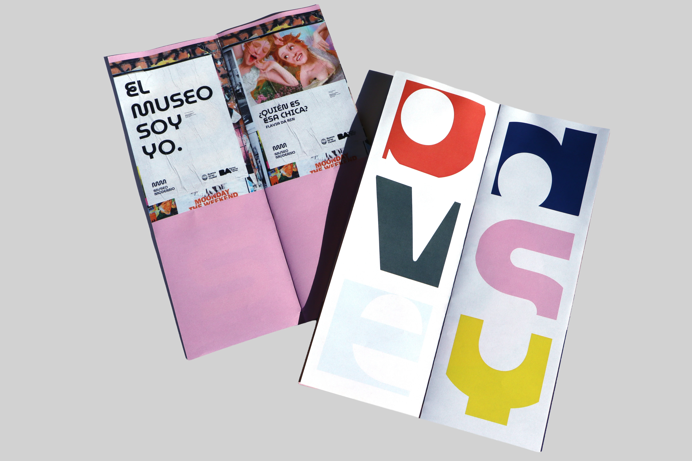
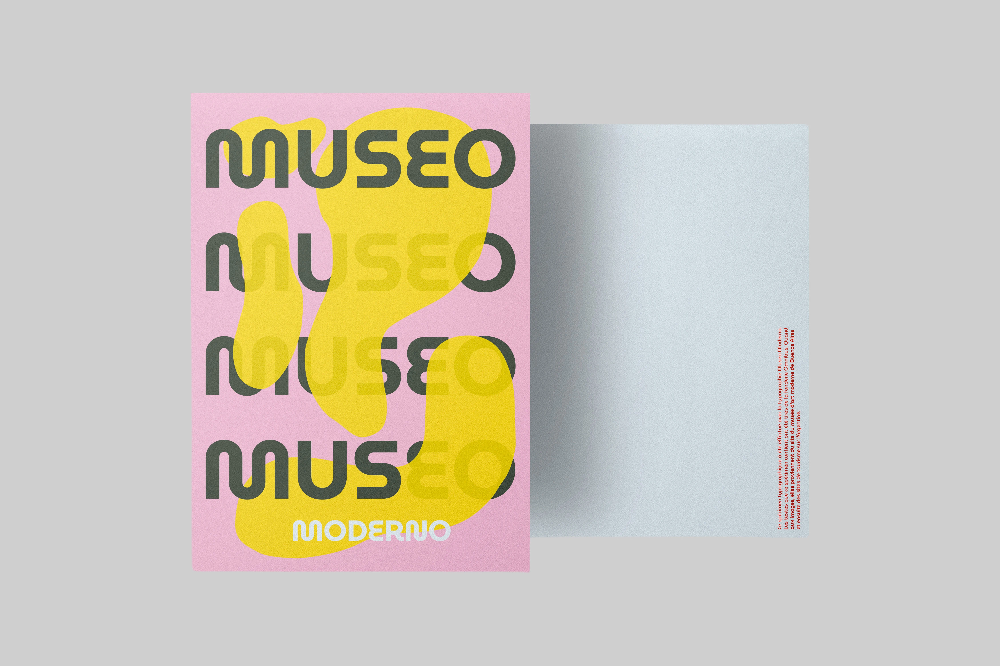
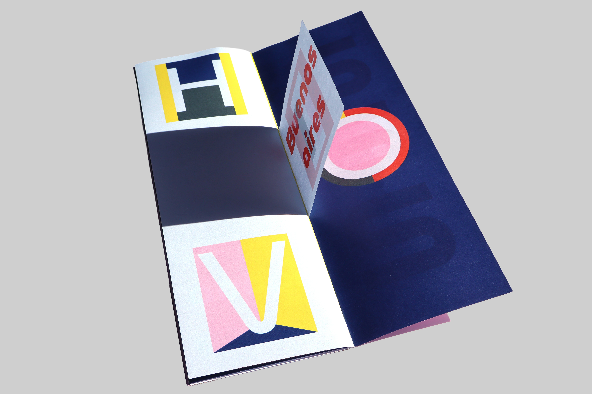
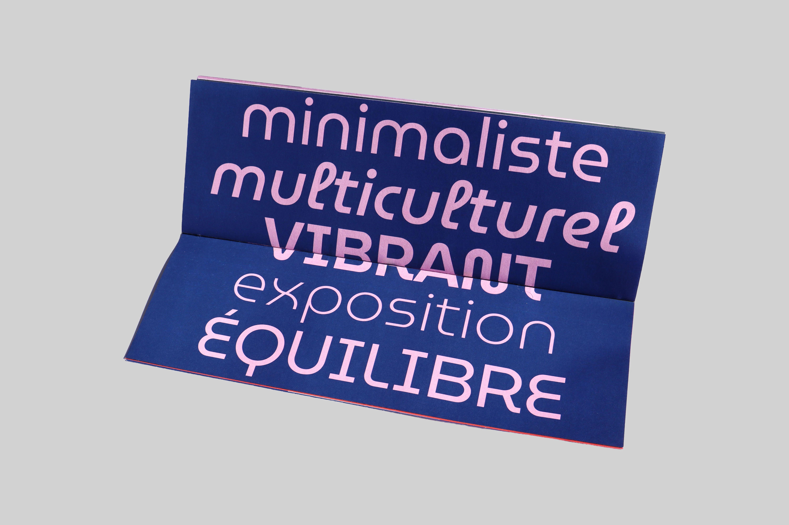

Museo Moderno
Spécimen typographique





Le spécimen s’articule autour de la typographie Museo Moderno, choisie pour son ancrage culturel lié à l’identité visuelle du musée d’art moderne de Buenos Aires. Cette connexion à l’Amérique latine oriente l’ensemble du projet, qui reprend les codes visuels de la ville et de son territoire. Deux éditions composent le spécimen : l’une typographique, l’autre iconographique, afin d’explorer l’univers graphique, architectural et atmosphérique associé à cette fonte.